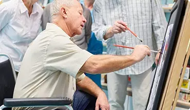

Последовательность
Приготовьте 15 предметов, которых раньше пожилой человек не видел. Разложите их в произвольном порядке на столе. Попросите своего родственника в течение 1 минуты смотреть на эти предметы, запоминая...
Читать полностью

Арт-терапия
Методика очень хорошо помогает восстановиться пожилым людям после инсульта. Занятия обычно проводит специалист, а суть упражнений сводится к развитию новых связей нейронов в головном мозге при помощи цветов.
Мелкая моторика
Улучшению памяти способствуют упражнения, выполняемые пальцами рук. Можно просто перебирать горох на столе, а идеальный вариант – вязание или вышивание
Карточные игры
Попробуйте поиграть со своим близким человеком в карты. Во время игры нужно запоминать ходы и используемые карты, что является хорошим упражнением для тренировки мозга.
Игра в слова
Попросите пожилого человека назвать 20 слов на выбранную вами букву. Можно предложить ему также вспомнить 20 мужских имен или 20 названий стран.